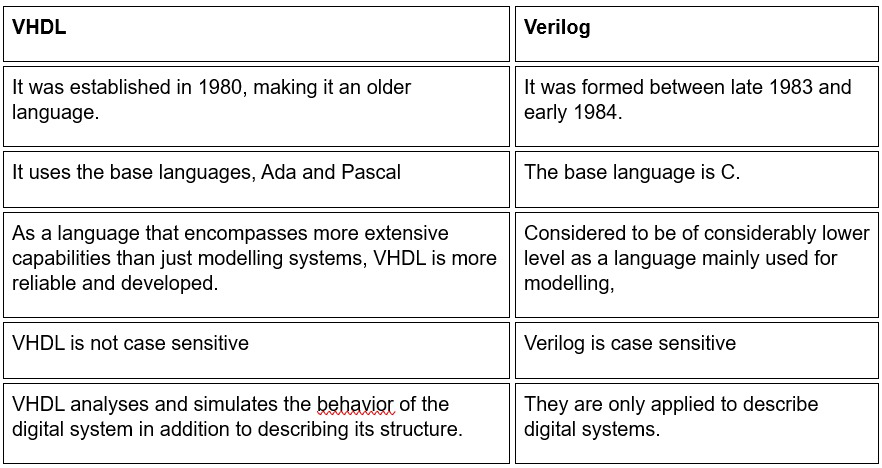

Answer:
Verilog is a text-based hardware description language used to describe electronic systems and circuits. It is used in timing analysis, test analysis, logic synthesis, and simulation-based verification.
Modeling levels:
Answer:
No, they are different. Verilog is based on the C language, whereas VHDL is based on Ada and Pascal.
Answer:
Answer:
Yes, race conditions occur due to concurrent events happening in different orders, causing unpredictable outcomes.
Answer:
It is used for continuous assignments to describe how outputs are driven by logic expressions.
Answer:
To avoid race conditions:
Answer: d) Both a) and b)
Answer:
With a temporary register:
always @ (posedge clock) begin
temp = y;
y = x;
x = temp;
end
Without a temporary register:
always @ (posedge clock) begin
x <= y;
y <= x;
end
Answer:
a) Dataflow modelling
b) Behavior modelling
c) Structural modelling
d) Component modelling
Correct Answer: b) Behavioral modelling
Answer:b) Structural